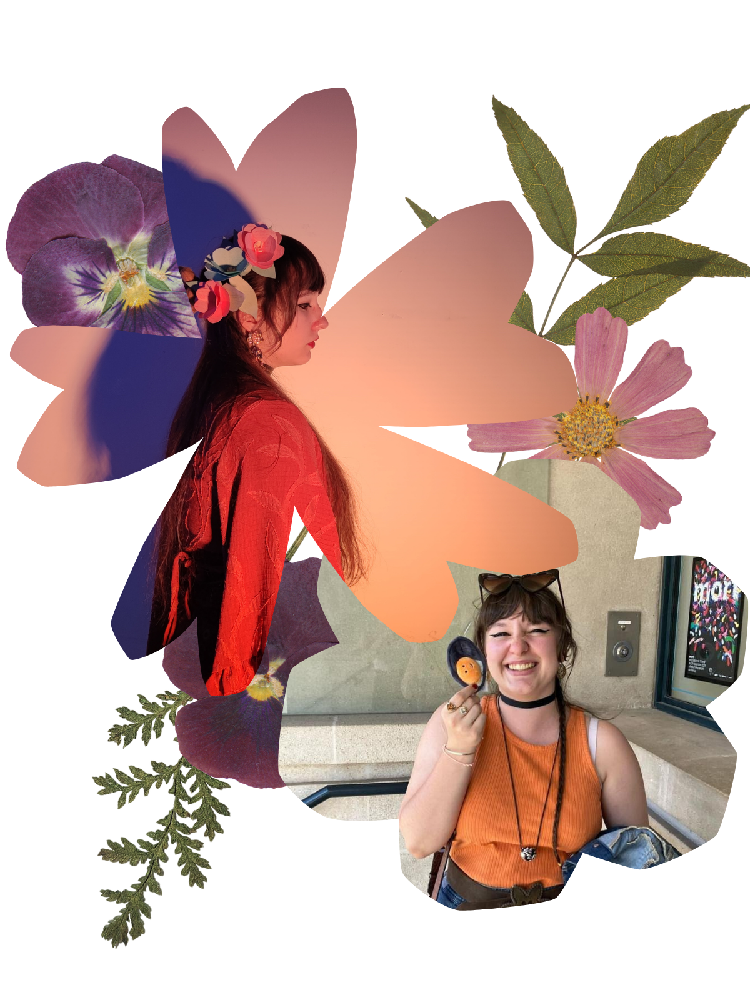

Depuis toute petite, j'ai toujours eu le goût de la création. Au lycée, la spécialité Arts Plastiques m'a confirmée dans ce choix d'orientation vers les métiers artistiques.
Etudiante 2ème année MMI • Recherche de stage de 3ème année dans le milieu du Graphisme et de la Communication
Bienvenue sur mon site porfolio !
Je suis Léa Thiébert, étudiante en 3ᵉ année de BUT Multimédias et Métiers de l'Internet. Passionnée par le design graphique, le web et la création numérique, je cherche un stage rémunéré de 14 semaines du 8 mars au 18 juin 2027 dans le milieu du Graphisme et de la Communication.
À propos de moi
Quelques traits de caractère et compétences qui me définissent

Toujours à l'affût des nouvelles tendances, j'aime comprendre comment les choses fonctionnent avant de les utiliser ou de les détourner.
Je porte une grande attention à mes travaux, quitte à reprendre un détail plusieurs fois jusqu'à ce qu'il soit vraiment juste.
Souvent cheffe de projet, je sais fédérer une équipe et mener un projet à son terme, tout en gardant une bonne ambiance au sein des participants
Membre de la cellule Égalité Diversité et Inclusion, j'ai appris à écouter et à faire avancer les choses concrètement.
Je m'implique pour améliorer le quotidien des étudiants, notamment via mon mandat de représentante des étudiants à Saint-Dié-des-Vosges au sein du collégium et de l'Université de Lorraine.
Mon CV